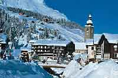

Туристическое агенство
Австрия
Франция
Греция
Географические сведения
Кухня
Что посмотреть
Австрия не случайно считается самой красивой страной Центральной Европы. Прекрасные
города с впечатляющими памятниками архитектуры, постоянно меняющийся ландшафт – горы, леса,
реки и долины превратили Австрию в удивительно уютный уголок. Путешествие в эту страну покажется
замечательным в любое время года. Летом – это купание в озерах, осенью – городской и культурный
туризм, отдых на лечебных курортах. Зимой – катание на лыжах в заснеженных Альпах.
Столица Австрии – Вена – восхитительна всегда. Старый центр все еще дышит „старыми добрыми временами“, и облик
города определяют архитектурные памятники. Благодаря многочисленным картинным галереям, концертным залам и Государственной
опере Вена слывет культурным центром Европы. Зальцбург – родина Моцарта. Ежегодно многочисленных гостей со всего мира
сюда привлекает очарование городских построек, красота загородных пейзажей и события культурной жизни, которые
проходят в городе Моцарта в память о композиторе. Но впечатляют не только всемирно известные события культурной жизни. Узкие
улочки Старого города, на которых не встретишь автомобилей, старинные гербы цехов ремесленников на ул. Гетрайдегассе, где можно также посетить дом-музей Моцарта, в котором родился композитор, бесчисленные свидетельства прошедших эпох создают здесь непередаваемую атмосферу.
Сама природа долин, где расположены термальные источники оказывает благотворное воздействие на самочувствие человека.
На поверхность Земли выходят термальные источники, температура воды которых достигает 47 градусов по Цельсию. На службе
здоровья и красоты стоят горная купальня и целебные подземные штольни, соляные источники, 54–градусный сернистый источник,
ванны, массажи, ингаляции. Кроме того, здесь можно пройти курсы лечебной гимнастики, электротерапии и массажа. Гости могут
доверить свое здоровье проверенным лечебно–восстановительным методикам, разработанным австрийскими учеными.
Зимний сезон на горнолыжных курортах открывается в конце ноября и длится в большинстве регионов до середины апреля. Но на
ледниках Австрии можно кататься на круглый год. Великолепные горнолыжные и равнинные трассы. В центрах зимнего спорта есть
отличные возможности для катания сноуборде. Работают установки для производства искусственного снега („снежные пушки“). Лыжные
центры здесь связаны бесплатными автобусными маршрутами. Функционируют школы по обучению катанию на лыжах и сноуборде.